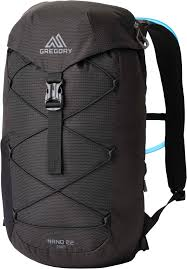

Structured data provided via JSON-LD (Product, FAQ, Breadcrumbs).

AUD $149.00
Built for day hikes and city-to-trail travel. At just 780g, SummitPack 28L combines a breathable back panel, 3L-compatible hydration sleeve and an integrated rain cover for fast-changing weather.
★★★★★
4.6 (94 reviews)
Why you’ll love it
- Lightweight 780g build with reinforced 420D base
- Breathable mesh back panel keeps you cool
- Hydration sleeve (fits up to 3L bladders)
- Stowable rain cover included
- Free AU shipping on orders over $50 • 30-day returns
Tech specs
- Capacity
- 28 litres
- Weight
- ~780g
- Material
- Ripstop nylon, 420D base
- Frame
- Light internal frame sheet
- Use
- Day hikes, travel
- Hydration
- Sleeve, up to 3L
- Rain cover
- Included, stowable
- Warranty
- 12-month manufacturing warranty
- Returns
- 30-day returns in original condition
Shipping & returns
Australia-wide delivery. Free standard shipping on orders over $50. Express options available at checkout. Returns within 30 days.
FAQs
- Will it fit a 3L hydration bladder?
- Yes — the sleeve is compatible up to 3L.
- Is the back panel ventilated?
- Yes — breathable mesh helps reduce heat build-up on climbs.
- Does it include a rain cover?
- Yes — a stowable rain cover is included.